이차전지 활성화 공정의 주요 설비를 자체 기술로 만듭니다. 셀의 성능과 품질을 결정짓는 마지막 공정까지, A-PRO가 책임집니다.
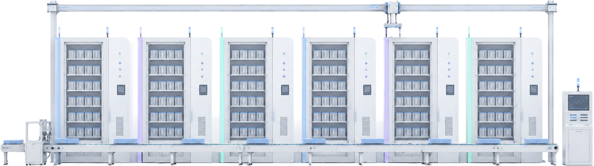
이차전지 활성화
Cycler
자동화 시스템
이차전지 소재
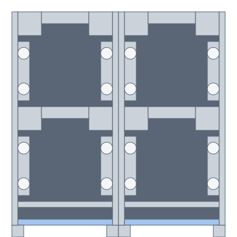
Pre-Formation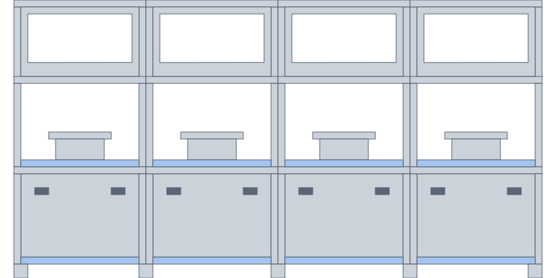
고온가압 충방전기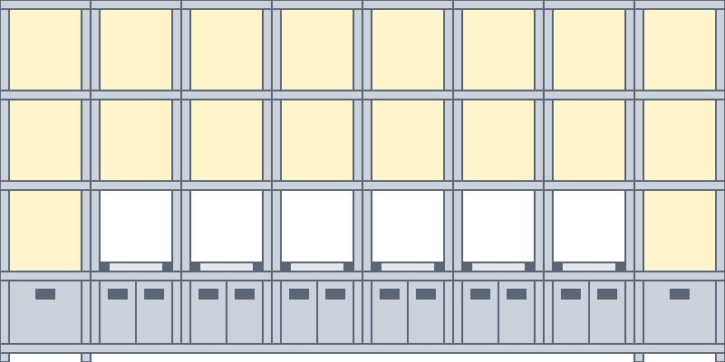
Selector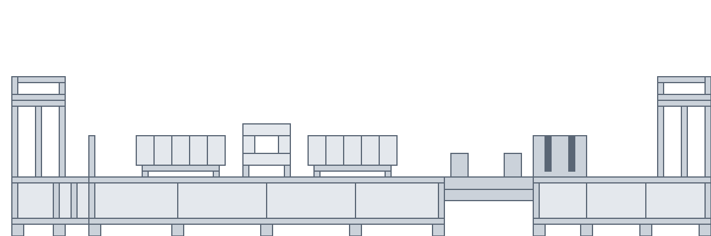
Degas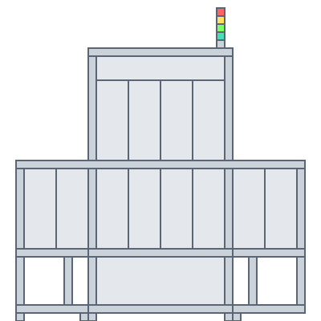
DCIR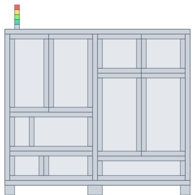
IR-OCV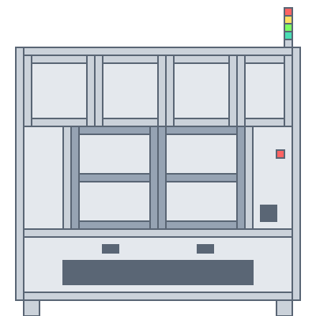
OCV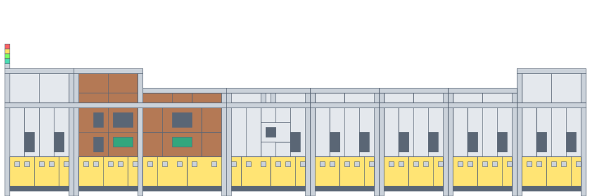
DSF / EOL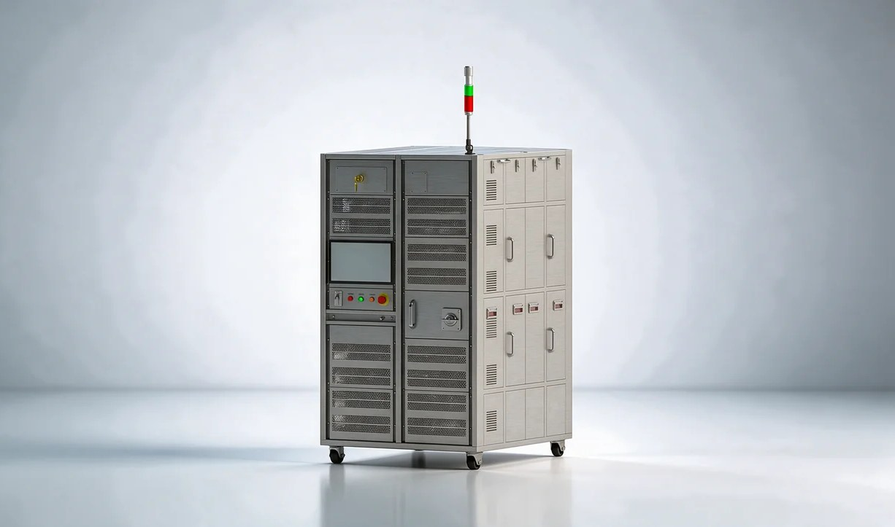
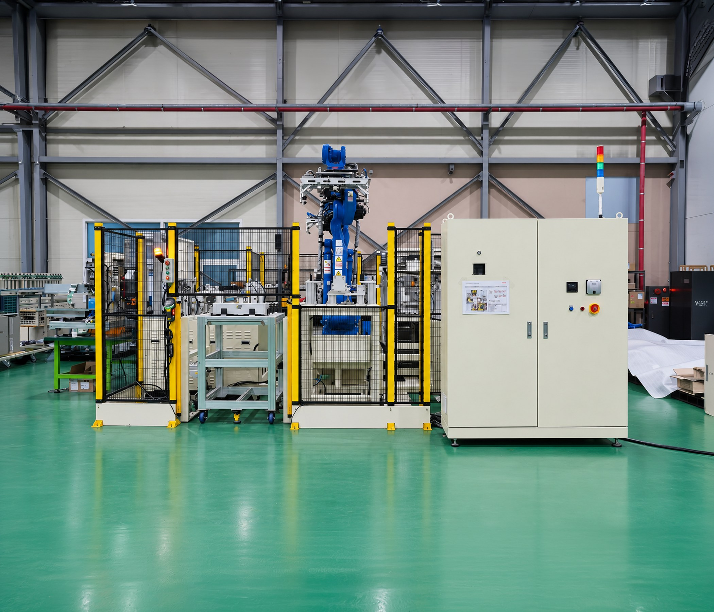
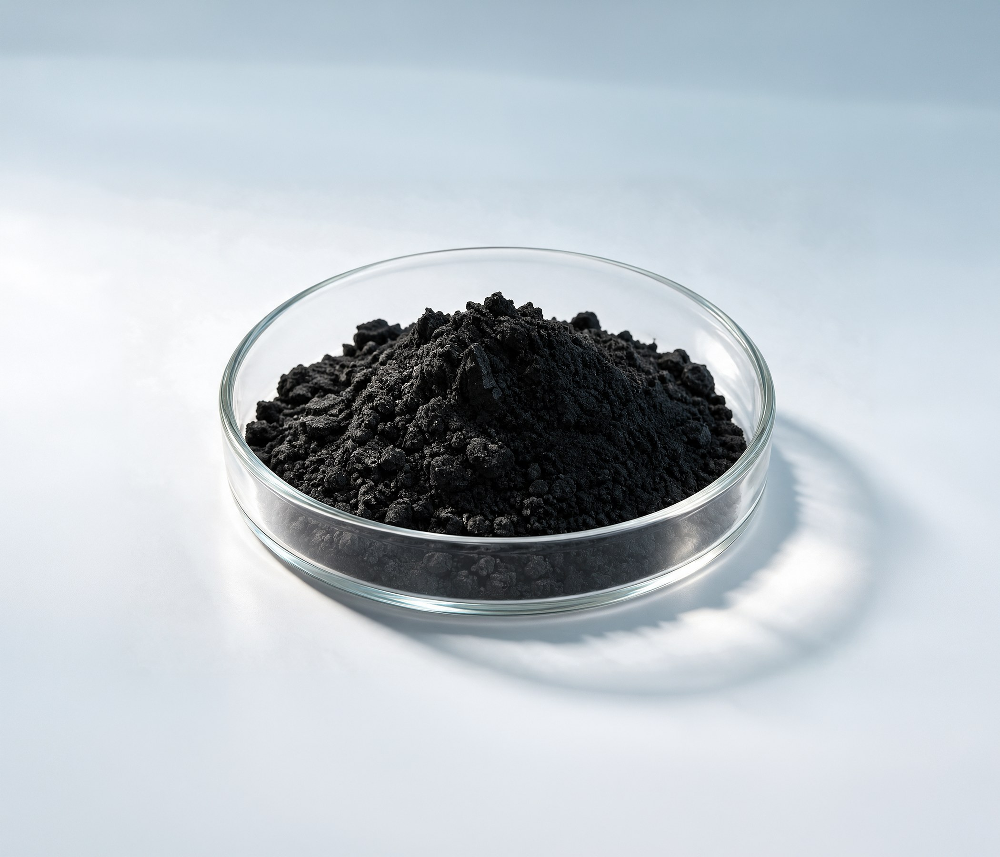
단일벽/소수벽 CNT 분말비표면적 ≥ 300~1,000 m²/g
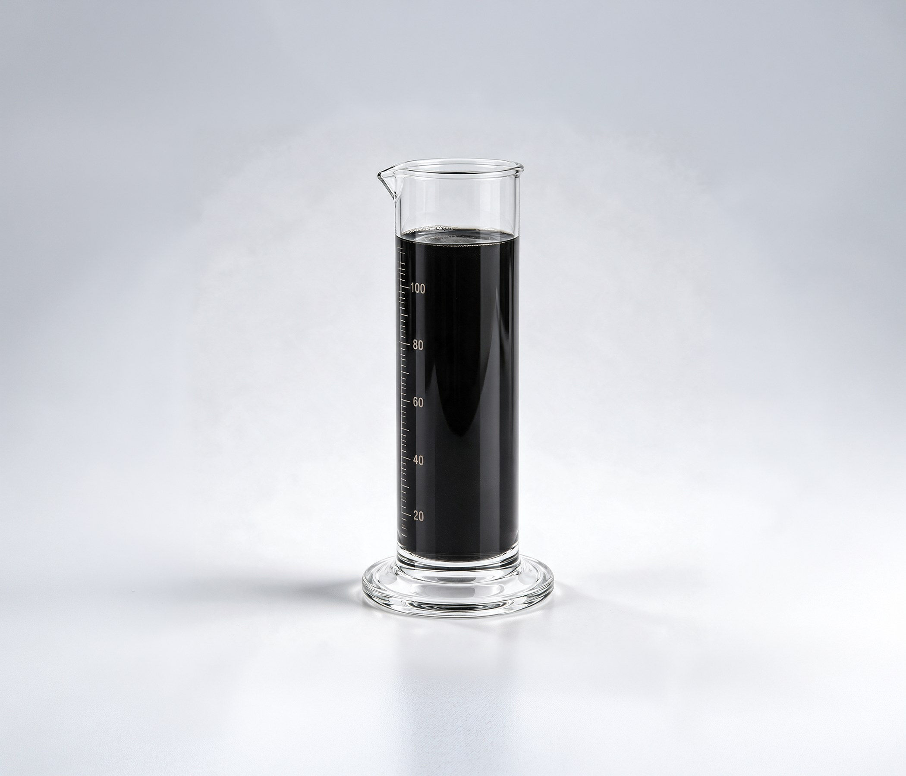
단일벽/소수벽 CNT 분산액CNT 함량 0.2 ~ 4.0 wt%
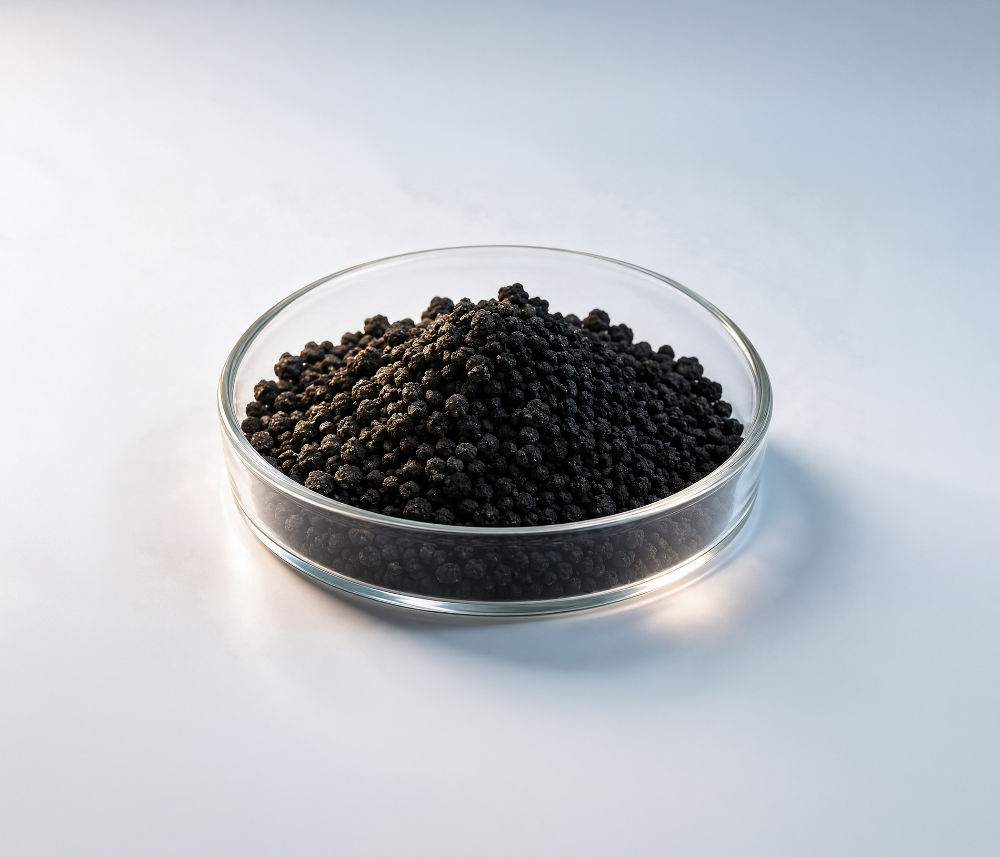
전도성 카본블랙비표면적 60 ~ 150 m²/g
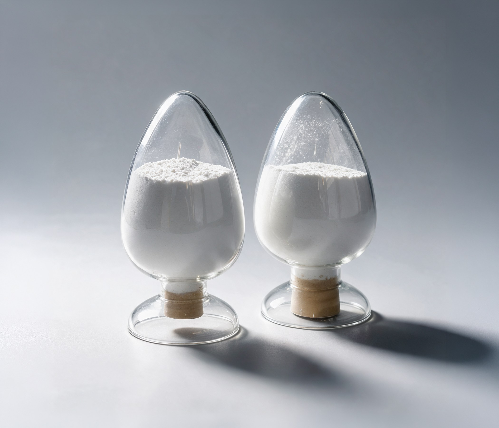
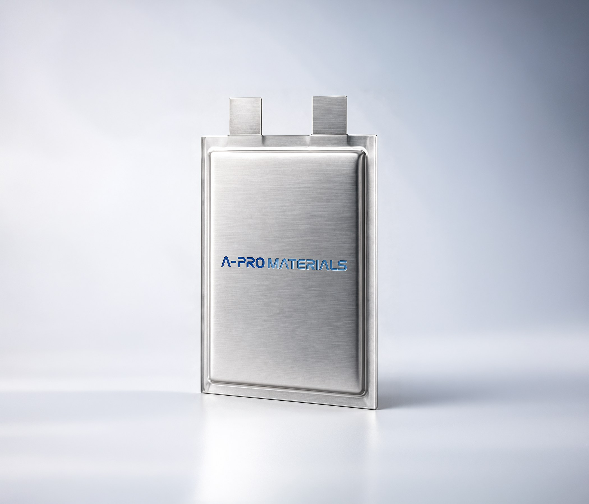
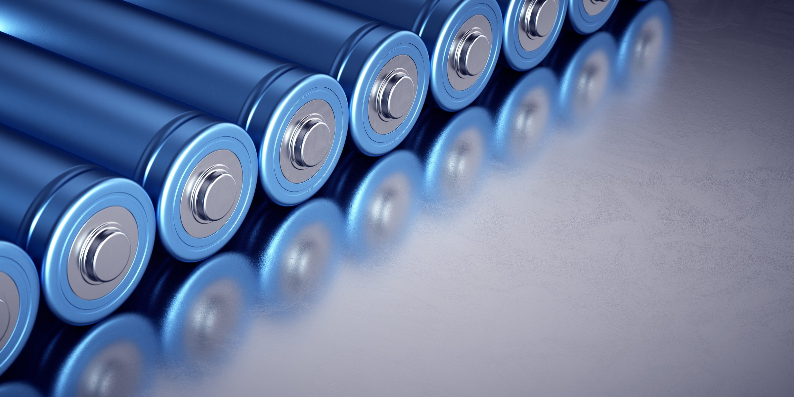
독보적인 기술력으로 완성하는 이차전지 활성화 통합 솔루션
에이프로는 이차전지 활성화(Formation) 공정의 전 설비를 자체 기술로 완성하는 리딩 기업입니다. 공정 내 모든 설비를 직접 생산하여 국내외 유수의 기업에 안정적인 공급을 제공하고 있습니다.
당사는 독보적인 정밀 충방전 기술과 고도화된 자동화 역량을 기반으로, 배터리 셀 활성화 공정 전반을 아우르는 '통합 자동화 솔루션'을 제공합니다. 더불어 각 공정에서 발생하는 전압, 전류, 온도 등의 핵심 데이터를 정밀 측정 및 제어함으로써 배터리 셀의 품질 완성도와 생산 안정성을 극대화합니다.
전 세계 배터리 생산의 중심, 에이프로 글로벌 네트워크
글로벌 시장을 선도하는 고객사의 성공적인 비즈니스를 지원하기 위해 미국 미시간, 폴란드, 중국 남경, 인도네시아에 현지 법인을 구축하고 있습니다.
현지에 상주하는 전문 엔지니어들이 셋업부터 유지보수까지 원스톱(One-stop)으로 지원하며, 안정적인 해외 거점을 바탕으로 고객과의 성장을 함께 이뤄 나갑니다.
배터리의 미래를 검증하는 고효율 친환경 사이클러
에이프로의 Cycler는 독보적인 양방향 전력 제어와 에너지 회생 기술을 통해 배터리의 성능 평가를 최적화하고, 완벽한 제조 안정성을 확보합니다.
성능 평가 및 신뢰성 검증
배터리를 반복적으로 충·방전하여 용량, 수명 주기, 내부 저항을 정밀 측정하고 실제 사용 환경을 완벽히 시뮬레이션하여 연구 개발 및 제조 단계에서 발생할 수 있는 열화 현상과 안전 문제를 사전에 빈틈없이 검출합니다.
양방향 전력 시스템
전류 공급(충전)과 흡수(방전)가 모두 가능한 양방향 전력 시스템을 기반으로 안정적인 테스트 환경을 제공합니다.
친환경 에너지 회생 기술
방전 시 버려지는 에너지를 회수하여 전력망으로 되돌려주는 기술을 활용합니다. 이는 전력 낭비를 획기적으로 줄이고 냉각 부하를 저감하여 경제적이고 친환경적인 생산 환경을 완성합니다.
스마트 자동화 공정 솔루션
에이프로의 2차전지 활성화 설비는 최첨단 자동화 시스템을 통해 Cell 및 Module 공정의 생산 효율성을 극대화합니다.
다관절 로봇, 물류 컨베이어, 스태커 크레인, AMR(자율주행로봇) 등 고성능 물류 설비를 유기적으로 연계하여, 상위 시스템(MES, FCS)에서 전달받은 실시간 공정 정보에 따라 자율적이고 정확하게 정밀 이송·투입·배출을 수행합니다.
단순 이송을 넘어, 상위 데이터에 기반한 자율적 판단으로 주어진 업무를 완벽하게 자동 처리함으로써 인적 오차를 줄이고, 최상의 공정 안정성과 데이터 기반의 스마트 팩토리를 실현합니다.
A-PRO Materials의 글로벌 소싱 네트워크를 활용하여 고품질의 탄소나노튜브(CNT) 소재를 안정적으로 공급합니다.
엄격한 품질 검증을 거친 CNT 소재를 통해 고객사의 배터리 에너지 밀도 향상과 고속 충전 성능 구현을 지원합니다.
A-PRO Materials는 엄선된 공급망을 통해 고순도 LiFSI 전해염 소재를 안정적으로 공급합니다.
우수한 화학적 안정성을 바탕으로 고객사 배터리의 수명 연장과 고온 안정성 및 출력 향상을 지원합니다.
LiFSI 전해질
고출력 · 수명연장용 차세대 전해염
비표면적 ≥300~1,000 m²/g
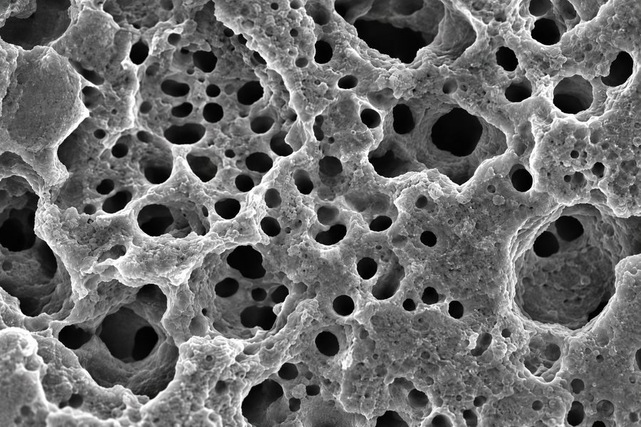
산화물계 전해질
산화물계 LLZMO · LATP
이온 전도도 0.2~1.0 mS/cm
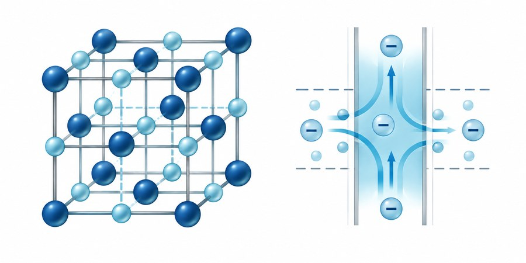
High Purity
Thermal Stability
Long Cycle Life
Fast Charging
Low Resistance & Low Viscosity
PVDF 바인더의 일부 대체 가능성을 검토할 수 있는 HNBR 바인더 소재입니다.
우수한 결합력과 유연성, 전극 저항 감소 효과를 통해 배터리의 고율 충·방전 성능과 안정성 향상에 기여할 수 있습니다.
HNBR 바인더
CNT 분산용 고성능 고무 바인더
포화도 99.6%
HNBR 라텍스
NMP계 고분산 액상 바인더
고형분 8~10%
PVDF 대체
기존 불소계 바인더의 5~15% 이상을 친환경 HNBR로 대체.
고율 충방전 특성
10C 고속 충전 조건에서도 우수한 용량 유지.
내부 저항 감소
젖음성 개선으로 이온 전달 및 계면 저항 최소화.
높은 강도 및 유연성
전극 활물질 부피 변화 흡수, 탈락 방지.
SWCNT 분산 최적화
단일벽 탄소나노튜브의 응집 해소, 점도 감소.
A-PRO Materials는 Lab-scale 파우치셀 제작 및 소재 적용성 검증 서비스를 제공합니다.
셀 설계부터 조립 공정, 품질 평가까지 통합 프로세스를 통해 고객사의 신소재 적용 가능성을 사전 검증합니다.
A-PRO Materials는 차세대 배터리 핵심 기술에 대한 지속적인 연구개발을 통해 미래 이차전지 시장에 대응해 나갑니다.
끊임없는 R&D 혁신으로 기존 배터리의 한계를 극복하고, 고성능·고안정성 소재 및 셀 기술을 선제적으로 구현해 나갑니다.
A-PRO Materials는 국내외 파트너들과의 협력을 통해 최적의 이차전지 소재 솔루션을 모색하고 있습니다.